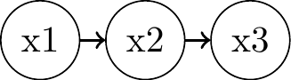
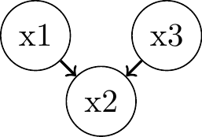
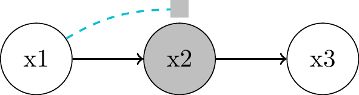
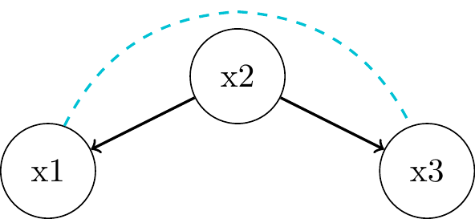
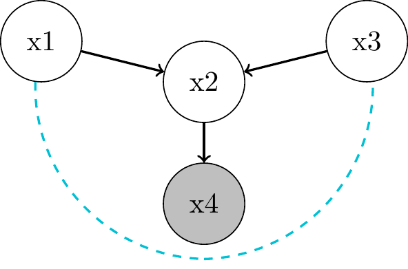

(2) Graphical Causal Models
Causal Data Science for Business Analytics
Tuesday, 14. May 2024
Graphs
- Graph theory provides a useful mathematical language to think about causality.
- A graph consists of vertices (or nodes) V and edges (or links) E. Vertices represent variables in the model and edges the connections between them.
- Edges can either be undirected or directed.


Directed Acyclic Graphs (DAGs)
- A directed path from a node to itself is called
directed cycleorfeedback loop: \(B \to C \to D \to B\). - Graph with feedback loops is called cyclic, with no feedback loops acyclic.
- We focus on directed acyclic graphs (DAGs) in this course:
- exclude variables that influence themselves.
- Econometricians speak of recursive models that can be given a causal interpretation.


Bayesian Networks
- Probabilistic graphical models (not causal):
- Modelling the joint data distribution by factorizing with the chain rule of probability: \(P(x_1, x_2, \ldots, x_n) = P(x_1) \prod_{i} P(x_i \mid x_{i-1}, \ldots, x_1)\)
- n = 4: \(P(x_1, x_2, x_3, x_4) = P(x_1)P(x_2 \mid x_1)P(x_3 \mid x_2, x_1)P(x_4 \mid x_3, x_2, x_1)\)
- \(P(x_4 \mid x_3, x_2, x_1)\) alone requires \(2^3 - 1 = 8\) parameters = > Focus on local dependencies:

\(P_{joint} = P(x_1)P(x_2 \mid x_1)P(x_3 \mid x_2, x_1)P(x_4 \mid x_3)\)

\(P_{joint} = P(x_1)P(x_2)P(x_3 \mid x_1)P(x_4 \mid x_3)\)
Graph Building Blocks
- Understanding the flow of association and causation in DAGs based on minimal building blocks:
Two unconnected nodes:\(P(x_1, x_2) = P(x_1) P(x_2)\)

Two connected nodes:\(P(x_1, x_2) = P(x_1) P(x_2 \mid x_1)\)

Chain:

Fork:

Immorality:

Chains


- \(x_1\) and \(x_3\) are
associatedthrough \(x_2\)- flow of association is symmetric whereas the flow of causality is directed
"Local Markov Assumption": we can block the associative path by conditioning on the parent \(x_2\)- \(x_1 \perp\!\!\!\perp x_3 | x_2\)
- => \(P(x_1, x_3 | x_2) = P(x_1 | x_2) P(x_3 | x_2)\)
- Proof?
Forks


- \(x_1\) and \(x_3\) are
associatedthrough \(x_2\) as common cause orconfounder "Local Markov Assumption": we can block the associative path by conditioning on parent \(x_2\)- \(x_1 \perp\!\!\!\perp x_3 | x_2\)
- => \(P(x_1, x_3 | x_2) = P(x_1 | x_2) P(x_3 | x_2)\)
- Proof? Do try this sh.. at home!
Immoralities and Colliders


- no association in the first place: \(x_1 \perp\!\!\!\perp x_3\)
- no common cause (“confounder” like in a fork)
- neither is \(x_3\) a descendant of \(x_1\) (like in a chain)
- \(x_1\) and \(x_3\) are unrelated things contributing to \(x_2\)
- \(x_2\) acts as a
"collider"that blocks the path between \(x_1\) and \(x_3\)- but only if we do not condition on \(x_2\)
Immoralities and Colliders: Numerical Example
Show code
library(tidyverse)
library(ggplot2)
library(ggpubr)
# simulate data
set.seed(123) # for reproducibility
looks <- rnorm(1000)
talent <- rnorm(1000)
x <- talent + looks
group <- 1 * (x > quantile(x, c(.75)))
# create a dataframe
df <- data.frame(looks, talent, group) %>%
mutate(group = if_else(group == 1, "With Job", "Without Job")) %>%
add_row(looks = Inf, talent = -Inf, group = "Overall")
# plot
ggplot(df, aes(x = looks, y = talent)) +
geom_point(aes(color = group)) +
geom_smooth(method = "lm", se = FALSE, formula = y ~ x, aes(color = "Overall")) + # Regression line for all data
geom_smooth(data = subset(df, group == "With Job"), method = "lm", se = FALSE, formula = y ~ x, aes(color = "With Job")) +
geom_smooth(data = subset(df, group == "Without Job"), method = "lm", se = FALSE, formula = y ~ x, aes(color = "Without Job")) +
stat_regline_equation(aes(label = ..eq.label.., color = as.factor(group)), formula = y ~ x) +
stat_regline_equation(aes(label = ..eq.label.., color = "Overall"), formula = y ~ x) +
labs(color = "Group") +
theme(legend.position = "bottom")
Descendants of Colliders


d-Separation Practice 1
Show code
library(ggdag)
library(ggplot2)
dag <- dagify(
# relationship for each node
W ~ Z,
W ~ X,
Y ~ X,
U ~ W,
# Location of each node
coords = list(
x = c(Z = 0, W = 1, X = 2, Y = 3, U = 1),
y = c(Z = 0, W = -0.5, X = 0, Y = 0, U = -1)
)
)
dag %>%
ggplot(aes(x = x, y = y,
xend = xend, yend = yend)) +
geom_dag_text(color = "black") +
geom_dag_edges() +
geom_dag_point(shape = 1) +
theme_dag()
- \(Z\) and \(Y\)
d-separatedconditional on- \(\emptyset\) ? 2. \(\{W\}\) ? 3. \(\{U\}\) ? 4. \(\{W, X\}\) ?
Flow of Association and Causation - Summary
- Total association between two variables flows along all unblocked paths in a causal graph.
- Association that flows along directed, unblocked paths is causal association.
- The remaining association is non-causal association, e.g.
selection biasorconfounding association. - Causal association is asymmetric, non-causal association is symmetric.
- Causal association is a subcategory of total association.
- d-separation can imply “Association is Causation`
- Ignoring the causal paths, are X and Y d-separated otherwise?

Conditioning vs Intervention

Neal, Brady (2020). Introduction to causal inference from a Machine Learning Perspective. Course Lecture Notes (draft).
Interventions and the do-Operator
- In graphical models, intervening on a variable X is similar to a kind of surgery in which we remove all edges into that variable:
- Pre-Intervention

- \(Y = f_y(T, X, \epsilon_y)\)
- \(T = f_2(X, \epsilon_T)\)
- \(X = f_3(\epsilon_X)\)
- Post-Intervention

- \(Y = f_y(T, X, \epsilon_y)\)
- \(T = t\)
- \(X = f_3(\epsilon_X)\)
Backdoor Adjustment: Example
Show code
library(ggdag)
library(ggplot2)
dag <- dagify(
T ~ X1 + X2,
X6 ~ T,
X2 ~ X3,
X1 ~ X3 + X4,
X5 ~ X4,
Y ~ X1 + X5 + X6,
exposure = "T", outcome = "Y",
coords = list(
x = c(T = 0, X1 = 1, X2 = 0, X3 = 0, X4 = 2, X5 = 2, X6 = 1, Y = 2),
y = c(T = 0, X1 = 1, X2 = 1, X3 = 2, X4 = 2, X5 = 1, X6 = 0, Y = 0)
)
)
dag %>%
ggplot(aes(x = x, y = y,
xend = xend, yend = yend)) +
geom_dag_text(color = "black") +
geom_dag_edges() +
geom_dag_point(shape = 1) +
theme_dag()
- Minimum sufficient adjustment sets?
Show code
library(ggdag)
library(ggplot2)
dag <- dagify(
T ~ X1 + X2,
X6 ~ T,
X2 ~ X3,
X1 ~ X3 + X4,
X5 ~ X4,
Y ~ X1 + X5 + X6,
exposure = "T", outcome = "Y",
coords = list(
x = c(T = 0, X1 = 1, X2 = 0, X3 = 0, X4 = 2, X5 = 2, X6 = 1, Y = 2),
y = c(T = 0, X1 = 1, X2 = 1, X3 = 2, X4 = 2, X5 = 1, X6 = 0, Y = 0)
)
)
adjustmentSets(dag){ X1, X5 }
{ X1, X4 }
{ X1, X3 }
{ X1, X2 }| Thank you for your attention! | |

|
|